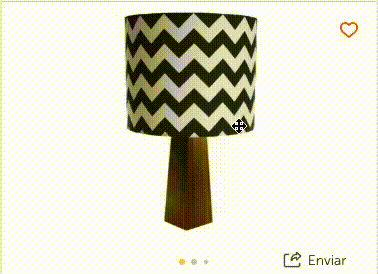
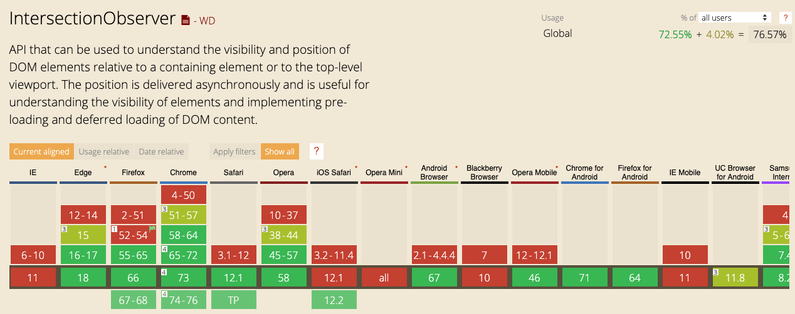
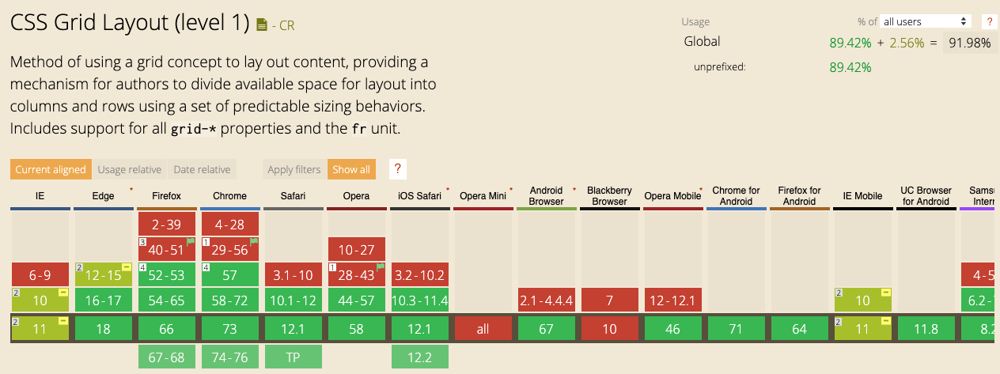
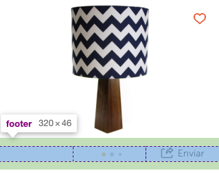
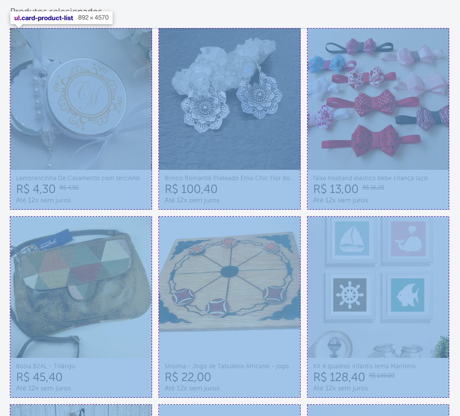
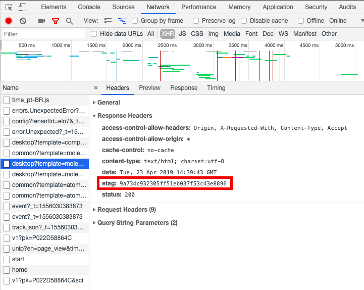

Front-End - Coisas de que nós nos orgulhamos em 2018!
Publicado em:
@fernandabernardo
Antes tarde do que nunca! Já acabamos o primeiro trimestre de 2019, mas ainda dá tempo de falar sobre o que fizemos aqui no Elo7 no time de front end.
Intersection Observer
Começamos a usar bastante a API do Intersection Observer, principalmente nos nossos carrosséis de imagens ao longo do site.

A Aline Lee fez um post só sobre ele, mas para resumir, com ele, você consegue observar um determinado elemento, que te avisa sempre que este aparece na área visível da página. Uma das grandes vantagens dele, é não precisar observar sempre o scroll da página, trazendo um ganho de performance. Quanto a compatibilidade, alguns browsers e versões ainda não estão compatíveis. Para resolver esse problema, aqui usamos esse polyfill.

No caso do nosso carrossel, nós utilizamos para observar quando a próxima imagem está visível para colorir a bolinha correspondente à sua posição.
CSS Grid Layout
Uma “novidade” do CSS, o Grid Layout veio fazendo sucesso desde quando as primeiras specs surgiram. Mas tivemos que esperar um pouco para usá-lo, por conta da sua compatibilidade com diferentes browsers.

Depois de alguns testes e tentativas, e também na melhora das compatibilidades, conseguimos finalmente colocar o Grid Layout no site, e em uma situação não tão convencional. Queríamos separar esses componentes em 3 colunas, e queríamos deixar o layout bem flexível.

O position: absolute até resolveria, mas seria bem mais complexo de resolver. Nesse caso, o código ficou assim:
footer {
display: grid;
grid-template-columns: repeat(3, 1fr);
}
E no elemento de “Enviar”, nós só posicionamos ele no lugar correto, com:
.share {
grid-column-start: 3;
}
Se quiser saber mais sobre o Grid Layout, tem tudo na documentação da MDN
Um outro caso que usamos, o mais convencional, foi para separar cada um dos cards de produto. E nesse caso, além da facilidade, também decidimos por usá-lo para alinhar melhor a nossa comunicação com o time de design, que já está bem acostumado a falar na “linguagem dos grids”.

JSON-LD
É bem importante o uso dos dados estruturados para melhorar o SEO da sua página. Mas existem algumas formas de fazer isso, vou falar apenas de duas: microdados e JSON-LD. Usávamos a estrutura de microdados por aqui, mas por recomendação do próprio Google, migramos para o JSON-LD.
Os microdados, são uma especificação baseada no HTML, e os dados estruturados são colocadas no meio do HTML visível para o usuário. Já no JSON-LD, as informações ficam em uma tag <script>, como no exemplo abaixo:
<script type="application/ld+json">
{
"@context": "http://schema.org",
"@type": "Offer",
"price": "30.30",
"priceCurrency": "BRL",
"itemOffered": {
"@type": "Product",
"name": "Caixa para brigadeiro!",
"image": {
"@type": "ImageObject",
"contentUrl": "https://img.elo7.com.br/product/original/1B4D545/brigadeiro-de-chocolate-belga-chocolate-belga.jpg",
"thumbnail": "https://img.elo7.com.br/product/360x360/1B4D545/brigadeiro-de-chocolate-belga-chocolate-belga.jpg"
}
}
}
</script>
Nesse exemplo foi representado uma oferta de um produto, você pode conhecer mais sobre essas estruturas no guia de dados estruturados da Google e testar qualquer página ou código online.
Linters
Sempre queremos padronizar nossos códigos de forma automatizada, e nada melhor para isso do que usar linters.
Hoje usamos dois tipos de linters, o stylelint e o eslint, e sempre rodamos eles junto com os testes antes de cada commit. Mas o uso de linters sempre é recomendado?
Bom… descobrimos que em algumas situações eles mais atrapalham do que ajudam. Foi o caso do htmllint, que removemos depois de um tempo. Isso aconteceu porque usamos o Dust.js e isso acabava confundindo o linter que estava preparado para funcionar com HTML puro. E o que acontecia, é que tínhamos que ficar sempre adaptando, criando hacks, e “burlando” o linter para funcionar corretamente. Até que percebemos que ele não estava verificando o que queríamos de fato e estava atrapalhando o nosso desenvolvimento. Por esse motivo, decidimos removê-lo.
Mas isso significa que todo linter não funciona? Claro que não! Para nós, o que funcionou melhor e bem foram os linters de CSS e JS, e continuam funcionando bem até hoje. Vale a pena testar e ver se adequa ao seu ambiente de desenvolvimento.
Etag
Cache é algo sempre complicado de desenvolver e que se não feito da forma correta, pode não atualizar modificações mais recentes ou sempre atualizar tudo. Um dos mecanismos do HTTP para lidar com o cache, é o uso do Etag. Esse tipo de header faz uma validação condicional do cache. Enquanto não houver alteração no conteúdo do arquivo, o valor do Etag continua o mesmo e fica cacheado.
Nós começamos a utilizar esse tipo de header para melhorar o cache dos nossos arquivos e conseguir otimizar a performance. Nesse método, o próprio navegador faz as verificações dos valores do Etag e decide o que fazer. Nós implementamos para que o servidor gerasse esse valor do Etag para que assim o navegador conseguisse fazer o restante do trabalho.

Non-interaction
Para coletar métricas, enviamos eventos de diversos tipos para o Google Analytics. Pode ser que o usuário tenha visualizado alguma parte do site, clicado em algum lugar ou navegado, enfim, existem diversos tipos de eventos. Há casos em que você quer obter métricas e não necessariamente o usuário interagiu com o site, ele pode ter apenas visualizado e não ter feito nada.
Existe uma forma de aperfeiçoar ainda mais esses eventos e ter métricas ainda mais precisas, usando o non-interaction. Quando não existe nenhum tipo de interação, normalmente essa métrica é contabilizada como rejeição. Ao adicionarmos o atributo non-interaction, essas métricas deixam de ser contabilizadas como rejeição, ficando mais precisas e reais.
Para conhecer mais, veja a documentação do Google Analytics.
Conclusão
Essas foram as principais tecnologias que marcaram o nosso 2018, ainda estamos incrementando todas elas, e estamos trazendo cada vez mais tecnologias para fazer parte do nosso trabalho!
O que você tem usado no seu front de interessante ou está estudando? Compartilhe conosco ;D